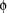
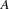

1.4 Imposing Propagators
The CPI provides a generic way to implement different schemes for imposing propagators. This section discusses the following issues:
How to implement a nestable propagator.
It is explained how to make the addition propagator of Section 1.2 nestable.
How to extend the class
OZ_Expectto cope with structured parameters.
The answers to these questions will be used in later sections, for example, when we come to implement propagators imposed on more than just single variables.
1.4.1 Basic Concepts
A propagator is imposed by a C/C++ function, a so-called header function, that is connected to an Oz abstraction. The application of such an abstraction results in calling the corresponding header function and finally in imposing the propagator.
CPI class OZ_Expect
The class OZ_Expect provides the functionality to fulfill the tasks mentioned above. It provides member functions to control the imposition of a propagator and to determine the constraints which have to be present in the store before a propagator is imposed.
The class OZ_Expect provides a group of member functions to examine the constraints of a propagator's parameters. The names of these member functions begin with expect. The basic idea is to define for each parameter a constraint  (expected to be present in the store) in terms of expect member functions and to decide whether is entailed resp. disentailed by the store (by evaluating the return value of the expect function expressing the constraint ). If entailment of for a parameter cannot be decided yet then the constraint in the store for this parameter is insufficient.
The type of the return value allows to handle structured parameters. The definition of the return type is as follows.
struct OZ_expect_t { int size, accepted; }
The meaning of the fields size and accepted is explained by the following examples.
- Example 1.
Assume a parameter is expected to be an integer, then the field
sizeof the returned value is 1. In case this parameter is currently a variable then the fieldacceptedis 0. An inconsistent constraint, like for instance a literal, would be indicated by -1. The value 1 in the fieldacceptedfor our example means that the examined parameter is an integer.- Example 2.
Let us suppose we expect a parameter to be a vector with
 integer fields, where a vector is either a closed record, a tuple, or a list. First the parameter is expected to be a vector (which is one constraint expected to be found in the store) and then all its elements are to be integers, which determines the field
integer fields, where a vector is either a closed record, a tuple, or a list. First the parameter is expected to be a vector (which is one constraint expected to be found in the store) and then all its elements are to be integers, which determines the field sizeof the return value to be . If the field
. If the field acceptedis also, then all expected constraints are present. Otherwise appropriate action has to be taken, for example, suspending the execution of the header function. The implementation to check for a vector of finite domain variable is discussed in Section 1.4.1.
An instance of the class OZ_Expect maintains two sets, namely  and  . In the course of checking parameters
. In the course of checking parameters expect member functions collect variables in either of these two sets. Variables which are constrained according to the corresponding expect function are added to set . All the other variables are added to set . The expect function for finite domain variables has an extra argument to determine the event which resumes the propagator, for example only narrowing of the bounds of the domain. This information is maintained in the sets too.
Leaving a header function by calling the member function suspend (see Section 1.2.5 of ``The Mozart Constraint Extensions Reference'') causes the header function to be resumed if variables collected in set are further constrained.
Calling OZ_Expect::impose() introduces the propagator which is passed as argument to the runtime system and makes the propagator resume if at least one variable of both sets is constrained in a way defined by the corresponding expect function. Additionally, variables in set are constrained to be finite domain variables. This will be used for the implementation of nestable propagators.
1.4.2 Imposing Nestable Propagators
In Section ``Creating a Propagator'' not too much attention was paid to propagator imposition. Now more details will be given by the example of a nestable propagator. Let us consider the following Oz code.
{FD.times {FD.plus U V} {FD.plus X Y} Z}
The propagator FD.plus is required to be nestable, since one of its parameters is syntactically not accessible and cannot be constrained to a finite domain variable by explicit Oz code. The expansion of the above code makes it clear.
local A1 A2 in
{FD.plus U V A1}
{FD.plus X Y A2}
{FD.times A1 A2 Z}
end
Due to lexical scoping the implicit variables A1 and A2 are inaccessible to outside code. Therefore the two FD.plus propagators must constrain A1 and A2 to finite domain variables before they are imposed. To simplify the implementation of header functions for propagators, the CPI provides three macros.
OZ_EXPECTED_TYPE(S)defines a C/C++ string
Stypically consisting of a number of substrings separated by commas which describe the constraint expected at the corresponding argument position. The first substring corresponds to the first argument with index 0, the second one to the second argument with index 1 and so on. The substrings are used to generate meaningful messages in case an inconsistent constraint is detected. There are predefined macros (starting withOZ_EM_defining strings for the possible constraints to be expected. For details see Section 1.2.6 of ``The Mozart Constraint Extensions Reference''. The macroOZ_EXPECTED_TYPEis required byOZ_EXPECTandOZ_EXPECT_SUSPEND.OZ_EXPECT(O, P, F)checks if the argument at position
P(Pis a C integer with a value starting from 0) is constrained according to the semantics ofF(which is anexpectmember function of classO). The type ofFhas to beOZ_Expect_t O::F(OZ_Term). The value ofOhas to be an instance of the classOZ_Expector a class inheriting from it. In case an inconsistent or insufficient constraint is detected, the appropriate action is taken 1 and the C/C++ function is left by areturnstatement. Otherwise, the execution proceeds to the next statement in the header function.OZ_EXPECT_SUSPEND(O, P, F, SC)is similar to
OZ_EXPECTexcept for the case that the constraint defined byFis currently not yet entailed. Then it increments the value ofSCwhich is expect to be of typeintand proceeds to the next statement in the header function.
In Section ``Creating a Propagator'' the macro OZ_EXPECT was already used for the non-nestable addition propagator. The macro OZ_EXPECT_SUSPEND is provided to implement nestable propagators. Insufficient constraints for a parameter cause it to increment its argument SC. Allowing exactly one argument to be insufficiently constrained implements a nestable propagator.
Therefore the header function has to suspend in case more than one parameter is insufficiently constrained. The class OZ_Expect therefore provides the member function suspend() which expects a value of type OZ_Thread. Details on how to create a thread for a C/C++ function can be found in Section 7.10 of ``Interfacing to C and C++''.
OZ_BI_define(fd_add_nestable, 3, 0)
{
OZ_EXPECTED_TYPE(OZ_EM_FD","OZ_EM_FD","OZ_EM_FD);
OZ_Expect pe;
int susp_count = 0;
OZ_EXPECT_SUSPEND(pe,0,expectIntVar,susp_count);
OZ_EXPECT_SUSPEND(pe,1,expectIntVar,susp_count);
OZ_EXPECT_SUSPEND(pe,2,expectIntVar,susp_count);
if (susp_count > 1)
return pe.suspend();
return pe.impose(new AddProp(OZ_in(0),
OZ_in(1),
OZ_in(2)));
}
OZ_BI_end
The variable susp_count is passed to the OZ_EXPECT_SUSPEND macros and if it is greater than 1 the function fd_add_nestable() is suspended. Otherwise the propagator is imposed.
1.4.3 Customizing OZ_Expect
The propagators implemented so far are imposed on single finite domain variables. The propagators will be resumed whenever an arbitrary element of a domain of its parameters is removed. But more elaborate propagators may have more demanding requirements concerning their resumption resp.parameter structure. Therefore the following frequently occurring requirements will be discussed in this section.
Often it is not desirable to resume a propagator as soon as any arbitrary element is removed from the domain of one of its parameters. For instance, one might want to suspend resumption until a domain becomes a singleton domain.
One wants to pass structured parameters to a propagator. In Section 1.5 a propagator will be implemented that expects a vector of finite domain variables.
The expect member functions are used to define new expect functions which specify the constraints for each parameter of a propagator which have to be entailed by the store to enable the imposition of the propagator. To conform with the macros OZ_EXPECT and OZ_EXPECT_SUSPEND the type of the resulting expect function has to be OZ_expect_t (O::*)(OZ_Term), where O is either OZ_Expect or a class inheriting from it.
The new member function expectIntVarSingl() is implemented as member function of class ExtendedExpect inheriting from OZ_Expect. The definition of the member function expectIntVarSingl() which causes a propagator to be resumed when a variable is constrained to an integer, uses
OZ_Expect::expectIntVar(OZ_Term t,
OZ_FDPropState ps);
provided by the CPI . The second argument ps determines the event for resuming the propagator. For details on the values determining the resumption event see Section 1.2.1 of ``The Mozart Constraint Extensions Reference''.
The following code defines the class ExtendedExpect with the member function expectIntVarSingl().
class ExtendedExpect : public OZ_Expect {
public:
OZ_expect_t expectIntVarSingl(OZ_Term t) {
return expectIntVar(t, fd_prop_singl);
}
The definition of an expect function for vectors is similar. The CPI provides for the function
typedef OZ_expect_t (O::*OZ_ExpectMeth)(OZ_Term);
OZ_expect_t OZ_Expect::expectVector(OZ_Term v,
OZ_ExpectMeth f);
which can be used to define a new instance of expectVector with the required signature OZ_expect_t (O::*)(OZ_Term). The semantics of expectVector defines that v is a vector and all elements of the vector are constrained according to f, which is an expect function too.
Note that for a member function passed to expectVector, defined in a class inheriting from OZ_Expect, the cast OZ_ExpectMeth is necessary, since the type system of C/C++ cannot figure out by itself that the type of the function passed is admissible.
The following code is part of the definition of class ExtendedExpect.
private:
OZ_expect_t _expectIntVarAny(OZ_Term t) {
return expectIntVar(t, fd_prop_any);
}
public:
OZ_expect_t expectVectorIntVarAny(OZ_Term t) {
return expectVector(t,
(OZ_ExpectMeth) &_expectIntVarAny);
}
OZ_expect_t expectVectorIntVarSingl(OZ_Term t) {
return expectVector(t,
(OZ_ExpectMeth) &expectIntVarSingl);
}
The implementation of the propagators discussed in the next sections assumes the existence of the class ExtendedExpect.